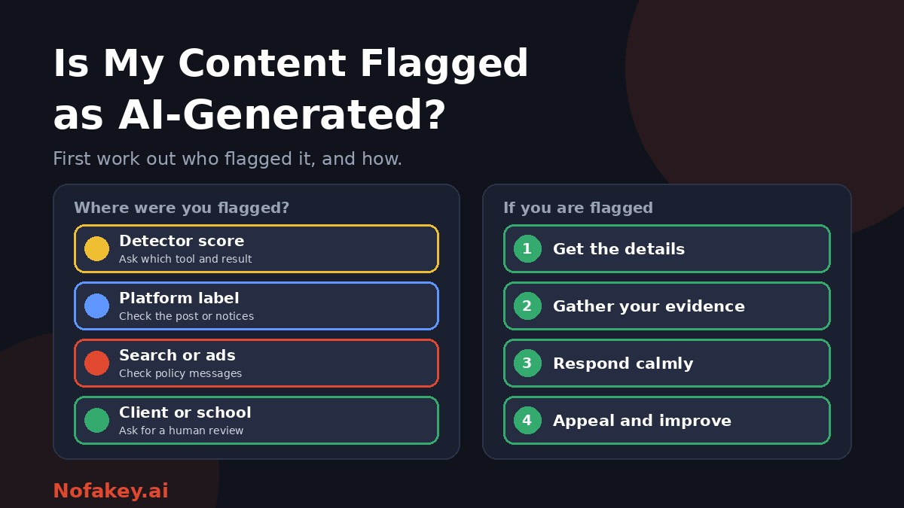

Maybe a client sent you a screenshot with a big percentage. Maybe a post suddenly shows an "AI" label, a teacher mentioned a detector, or your traffic dropped and someone blamed AI. "Flagged as AI-generated" can mean very different things depending on who did the flagging. This guide helps you work out where a flag might come from, how to check, and what to do next, whether you used AI or not.
Where a "flag" can come from
| Source | What "flagged" usually means | How to find out more | What to do |
|---|---|---|---|
| A detector someone ran | A tool estimated that the text resembles AI writing. It is a probability, not a fact | Ask which tool, which score, which passages and when | Share your process evidence and ask for a human review |
| A client, editor or employer | They used a tool, a hunch or a platform report to question the work | Check your contract and the stated AI policy, and ask what the concern is | Respond professionally, share drafts, offer to discuss or revise |
| A school or university | A submission system or a marker raised a concern | Ask for the report, the process and your options | Follow the formal process and use support services |
| A social or media platform | A label or badge was added from signals such as metadata, content credentials, your own disclosure or detection systems | Open the post's information panel, check your notifications and policy messages | Use the platform's appeal or feedback route, and keep original files |
| A music or video service | A badge may reflect AI tools anywhere in the production, even light assistance | Check the distributor or service's help pages and your dashboard | Dispute with evidence of how the work was made |
| A search engine | No AI flag is attached to pages. Spam policies target low-value content made to manipulate rankings, however it is made | Look for messages and manual action notices in your search console, and compare traffic changes with other causes | Improve helpfulness and originality, fix any stated issue, and request a review if a manual action applies |
| An ad or marketplace platform | A policy check rejected or limited your content | Read the notice and the policy it cites | Fix the issue and appeal through the platform |
The same sentence, "my content is flagged," can describe all seven. The next steps depend on which one applies to you.
How to check your own content
- Work out who is judging it. A client, a class, a platform, a search engine? Their rules and tools are the ones that matter.
- Look for the notice. Check email, dashboards, notifications and the post or page itself for a label, message or report.
- Ask for details. Which tool, which result, which parts, and what is the concern?
- Test samples yourself, if you wish. Run a few paragraphs through two or three detectors to see which passages sound generic. Expect different answers, and treat them as clues. See AI detector accuracy comparison for how to read them.
- Protect your privacy. Do not paste confidential or unpublished work into tools you do not trust.
- Review the work honestly. Is it specific, accurate and in your voice, or generic and thin?
Why human-written content gets flagged
- Clear, formal or formulaic writing can look predictable to a detector.
- Non-native English writing is flagged more often in research. See AI detector false positives for non-native English writers.
- Grammar and rewriting tools can smooth text in ways that resemble AI output.
- Short or templated text gives little to measure.
- Common phrasing and quotations, which appear in lots of other text.
- Habits such as em dashes or certain words, which people used long before AI tools did.
If your content was flagged: what to do
- Stay calm and keep everything. Do not delete drafts, files or history.
- Get the specifics: who flagged it, which tool or system, what result, and which passages.
- Gather evidence of your process: version history, drafts, notes, outlines, research and sources.
- Respond politely and factually. State that you wrote the work, explain how, and offer to discuss it.
- Point out the limits of detectors, including false positives and bias, without being defensive.
- Request a human review and ask about the appeal process and timeline.
- Use the right route: a school's formal procedure, a platform's appeal form, or a search console review request.
- Learn from it. Keep better records going forward, and make the work more specific if it is generic.
Sample reply (adapt to your situation)
Thank you for letting me know. I wrote this work myself, and I can share my drafts, notes and version history. AI detection tools can give false results, so I'd be grateful for a human review of the piece. Could you tell me which tool and result were used, which passages were flagged, and how I can appeal?
For students, see ChatGPT text detector for students. For freelancers and clients, see AI writing detectors for freelancers and clients. For essays, see how to tell if an essay is AI-generated.
If you did use AI
If you used AI and the rules allow it, say so plainly and show how you used it. If the rules did not allow it, honesty usually helps more than denial. Then:
- Check the rules that apply to your school, client or platform.
- Disclose in a short, clear note. Wording ideas are in how to label AI-generated content.
- Edit and verify. Check facts and sources, and add your own expertise and examples.
- Do not use "humanizer" tools to hide it. They do not fix an integrity problem, and may breach the rules.
If a platform labelled your image, video or audio
- Labels can come from metadata or content credentials added by editing or generation tools, from your own disclosure, or from detection systems.
- Check what your tools add to files and whether they mark AI-assisted edits.
- Keep your original files and project records, which help if you need to dispute a label.
- Use the platform's feedback or appeal route, and read its AI policy.
- Label honestly yourself where you used AI, so the platform and audience are not surprised. For images, see how to spot AI-generated images to understand what viewers may notice.
If you are worried about search engines
- Pages do not carry an AI flag in search. Spam policies focus on low-value, mass-produced content.
- A traffic drop has many possible causes, such as updates, competition, technical problems and quality issues, so do not assume AI is the reason.
- Check search console messages and the manual actions report for any notice.
- Focus on usefulness, originality, accuracy and clear authorship. See does Google penalize AI-generated content?
- Agencies can follow the framework in AI content audit for SEO agencies.
Lowering the chance of false flags, honestly
- Write with specifics: real examples, names, data, experiences and your own reasoning.
- Keep process evidence as a habit: version history, drafts and notes.
- Be careful with heavy automatic rewriting, which can flatten your voice.
- Disclose tool use where it is expected.
- Do not distort good writing to chase a score, and do not use tools built to hide AI use.
If a link, offer or message connected to a flag looks suspicious, such as an email "confirming" an AI violation, paste it into our free checker for a quick first read. It is not an AI-content detector. Scam emails sometimes pose as platforms threatening penalties, so see how to spot AI-generated scam emails.
Conclusion
Whether your content is "flagged as AI-generated" depends entirely on who is checking and how. There is no universal flag to look up, so find the source, read the reason, gather your process evidence, respond calmly and use the appeal route. Remember that detectors can be wrong, and that honest disclosure and better, more specific work help in every case. Find more guides on the Nofakey.ai blog.
Frequently asked questions
Is there a way to see if my content is flagged as AI-generated everywhere?
No. There is no single AI flag shared across the internet. Each detector, platform, search engine, client or school applies its own checks, so you need to work out who is judging your content and ask or look there.
How can I check if my writing looks AI-generated?
You can run samples through a few detectors to see which passages sound generic, but results vary between tools and can be wrong. Treat them as clues, avoid pasting confidential text, and do not rewrite good work just to change a score.
Does Google flag AI-generated content?
Google does not attach an AI flag to pages. Its spam policies target low-value content produced to manipulate rankings, however it is made. If you suspect a problem, check for messages and manual action notices in Search Console and focus on helpfulness and quality.
Why did a platform add an AI label to my post or track?
Platforms may add labels based on signals such as metadata or content credentials from editing or generation tools, your own disclosure, or detection systems. Check the post or notices for the reason and use the platform’s appeal or feedback route.
What should I do if human-written content is flagged as AI?
Ask who flagged it and how, gather drafts, version history and notes, respond calmly, request a human review and use any appeal process. Mention that detectors can give false results, especially for formal or non-native writing.
Got a suspicious message or link to check?
Run it through the checker